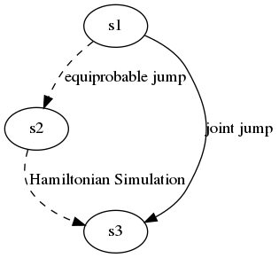
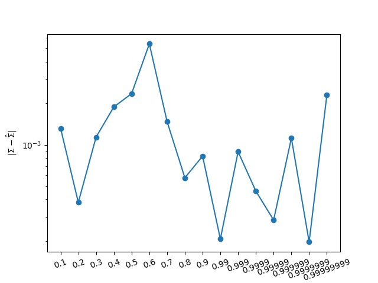

在《多粒子哈密顿仿真》一文中，我们讨论了带粒子碰撞的哈密顿仿真，但没有涉及抽样。
显然，碰撞现象的存在给抽样带了困难，因为碰撞改变了单个粒子的总能量。一个粒子碰撞前后的总能量不同，不能再假设碰撞前后两个状态之间的相互跳转概率相同。因此无法再利用《实现哈密顿蒙特卡洛(1)》中介绍的接受概率公式，因此也就无法实现正确的抽样。
粒子碰撞的好处是：交换能量。这使得不同的粒子具有不同的并且可以变化的总能量。多样化的总能量使得算法不必押宝于一个单一的总能量。
因此我们需要的实际上是能量的交换，而不是具体的碰撞。
只需要实现虚拟的“碰撞”，使得“碰撞”前后的任何状态都等概率出现即可。其实质上是重新分配能量，使得其出现的概率相同,其目的是实现等概率跳转。
消除碰撞的另一个原因是，准确的大量粒子之间的碰撞基本上是不可能实现的。而能量交换的实现方式可以轻而易举地实现大规模同时运行的哈密顿蒙特卡洛抽样。
具体过程可以借助于物理模型，进行说明。
假设系统有N个粒子，每个粒子有3个坐标和3个动量，因此系统总共有6N个维度。
所有粒子的动能和势能之和为已知常数:
\[\sum\limits_{i=1}^N \frac{p_{i1}^2+p_{i2}^2+p_{i3}^2}{2}+U(q_{i1},q_{i2},q_{i3})=\text{const.}\]
对于已知所有粒子位置的情况下，约束变为：
\[\sum\limits_{i=1}^N \frac{p_{i1}^2+p_{i2}^2+p_{i3}^2}{2}=\text{c}.\]
3N个动量标量是对称的，在位置确定的情况下，这些动量值均匀分布分布位于一个3n维空间的3N-1维的球面\(\mathbb{S}_R^{3N-1}\) 。
如果“碰撞”后的动量从 \(\mathbb{S}^{3N-1}\) 上均匀选取的话，就能保证从任何一个动量（状态1）到任意其它动量(状态２)的跳转概率相同。
在“碰撞”后，经过一个哈密顿仿真，从状态2再跳转到状态3。由于哈密顿仿真不改变总能量，因此状态2和状态3的总能量相同，状态2和状态3的相互跳转概率相同。
综合以上两个跳转，因此状态1和状态3之间的相互跳转概率相同。从而仍然可以利用接受概率公式进行抽样。

至此，我们就到达了一个重要的分水岭位置，即我们可以实现多个粒子的哈密顿蒙特卡洛抽样，而且不必实现粒子的碰撞检测算法。
与以前一样，我们仍然需要设置总能量，但此时只需要设置所有粒子的总能量之和，这个总能量在各个粒子之间的分配则是由算法自动实现的。显然这比为单独粒子设置总能量要稳定得多。
实现的代码片段如下：
xStar = x[-1] # 重新生成动量 p0 = np.random.randn(D, POINTS) # 计算原来的总势能和新的总势能 K0 = H - U(xStar).sum() K1 = K(p0).sum() # 设置动量半径 r0 = np.sqrt(K1/K0) pStar = p0 / r0 # 基于位置变换的哈密顿仿真 zStar = x2z(xStar) E = [U(xStar)] for s in range(STEPS): zStar = zStar + dt*dK(pStar) pStar = pStar - dt*np.dot(cov_hat_half, dU(z2x(zStar)))
我们使用一系列从一般到高度奇异的协方差进行测试： \[ \Sigma = \begin{bmatrix}1&\rho\\ \rho &1\\\end{bmatrix}\]
以下是驱动代码。采用的衡量标准是估计的协方差和真值之间的距离。这种方式可能不够理想，但属于定量比较，因此更为客观。
rho = [.9, .99, .999, .9999, .99999, .999999, .9999999, .99999999 ] for i in range(len(rho)): r = rho[i] SIGMA = np.array([[1, r],[r, 1]]) U = lambda x: np.sum(x * np.linalg.solve(SIGMA,x), axis = 0)/2 dU = lambda x: np.linalg.solve(SIGMA, x) info = ghmc(U, dU, D=D, dt=dt,EPISODE=EPISODE, POINTS=POINTS,VERBOSE=False) x = info['x'] d = np.sum(np.square(np.cov(np.transpose(x[int(POINTS*EPISODE/2):,:])) - SIGMA))
如果与基于坐标变换的哈密顿蒙特卡洛文中的实验结果进行对比，就会发现，又多得到几位数字精度。
